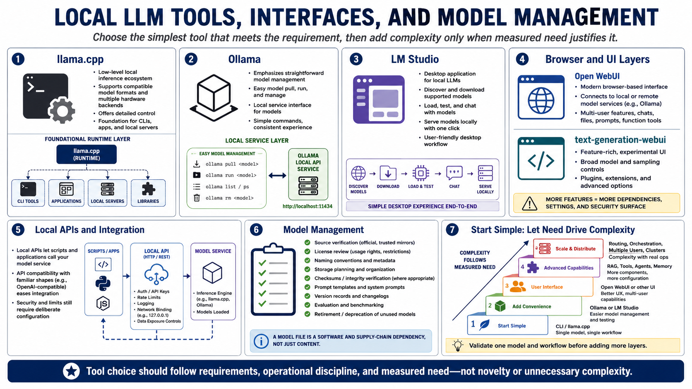

Software Stack Options
Connecting to LMS... Progress: in progress

Narration
llama.cpp is a low-level local inference ecosystem that supports compatible model formats and multiple hardware backends. It offers detailed control and can serve as a foundation for command-line tools, applications, and local servers.
Ollama emphasizes straightforward model management and a local service interface. LM Studio provides a desktop experience for discovering, loading, testing, and serving supported models. Both can simplify common workflows while retaining runtime-specific limits.
Open WebUI provides a browser-based interface that can connect to supported local or remote model services. Text-generation-webui offers a broader experimental interface at a high level. More features also create more dependencies, settings, and security surface.
Local APIs allow scripts and applications to call a model service. Compatibility with a familiar API shape can ease integration, but authentication, network binding, request limits, logging, and data exposure still require deliberate configuration.
Model management includes source verification, license review, naming, storage, checksums where appropriate, prompt templates, version records, evaluation, and retirement. A model file is a software and supply-chain dependency, not just content.
Start with the simplest tool that meets the requirement. Validate one model and workflow before adding orchestration, agents, retrieval, multiple users, routing, or distributed services. Complexity should follow measured need.